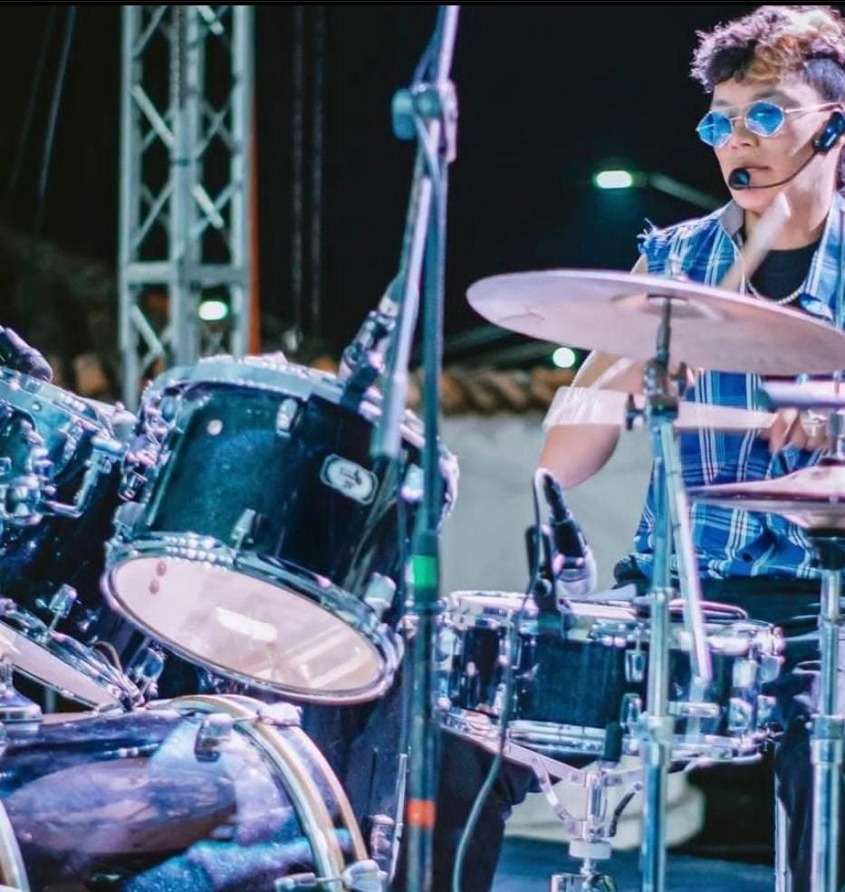

-
Juan José “Toto” Galindo Susunaga, Baterista, cantautor.
Un apasionado de la música, miembro fundador de Izkaos. Empezó a los 7 años a aprender sobre la percusión, siendo parte de diferentes colectivos como la escuela de música de Tunja, el convenio de la gobernación y la escuela de música de Comfaboy. Ha sido partícipe en diferentes escenarios como el Mono Núñez, el festival más importante de música colombiana. Es un eterno estudiante y un dispuesto colaborador.

-

Juan Gabriel “Samsa” Amado, Guitarrista líder y cantautor.
Inició en la música a muy corta edad debido a la trayectoria musical de su familia, participando en eventos musicales de toda clase, desde encuentros a nivel colegial hasta encuentros carrangueros. Destacando su talento en las cuerdas y pasión por la música en general, siempre dispuesto a aprender y crecer como músico y artista, es uno de los miembros fundadores de Izkaos y colaborador de bandas como Los Juanes y Yeti.
-
Diego Andrés Sánchez, Cantante, guitarrista y compositor.
Desde temprana edad, su afinidad a la música fue algo que lo acompañó. Durante su secundaria, aprendió a tocar instrumentos de cuerda por cuenta propia, inicialmente como solista y posteriormente perteneciendo a diferentes grupos (bandas de rock, grupo norteño e incluso carranguero). Ha participado en múltiples escenarios culturales en la región y ha sido ganador de convocatorias culturales a nivel nacional y departamental.

-

Miguel Angel “Riss” Avellaneda, Tecladista.
Con una década de experiencia en el ámbito musical, inició en el mismo como miembro del Coro y Banda Sinfónica de la Fundación Shabach de Duitama, donde obtuvo el John Philip Sousa Band Award en 2018. Ha concursado en eventos como el Cacique Tundama representando a la misma y ha trabajado con bandas como Paradox y The Blue Flame.
-
Juan David “Oss” Martínez Gámeza, Bajista y corista.
Inició su formación musical en bajo eléctrico desde los 14 años y, posteriormente, como profesional, en guitarra clásica. Ha participado como bajista en la Orquesta de Guitarras de la Licenciatura en Música de la UPTC, así como en la banda de rock BMO y la agrupación de jazz y funk Varon Jazz Ensemble.